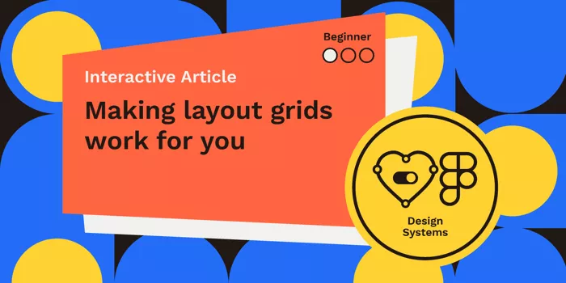
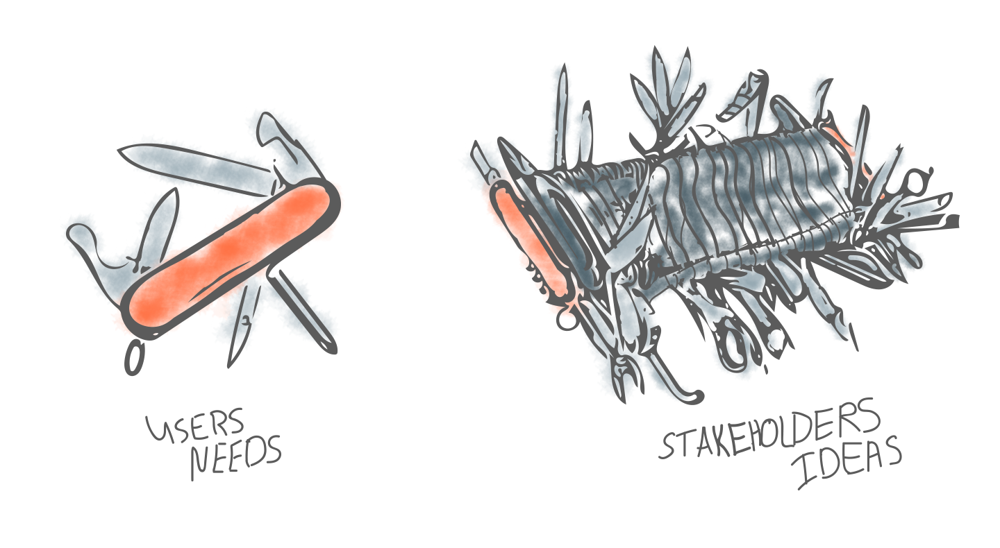
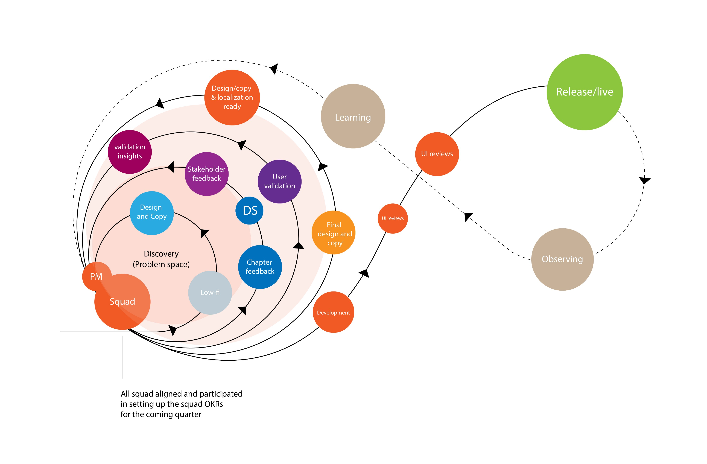
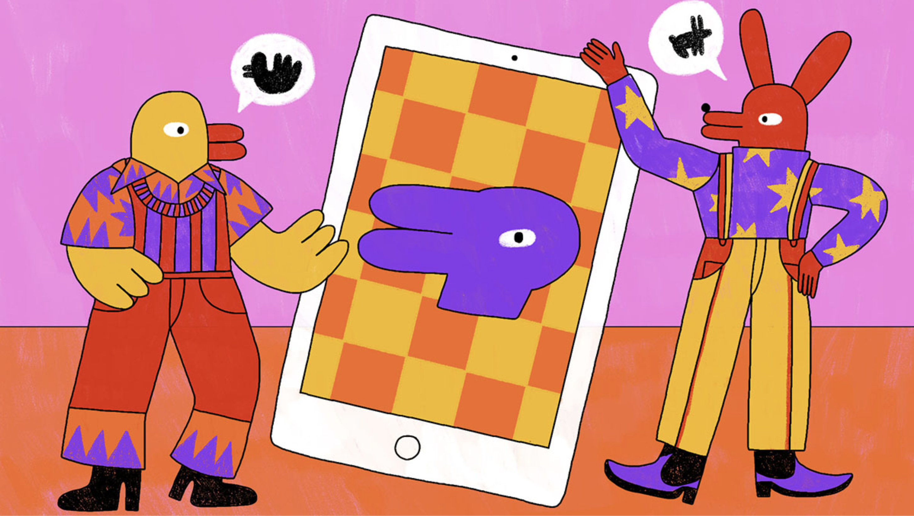
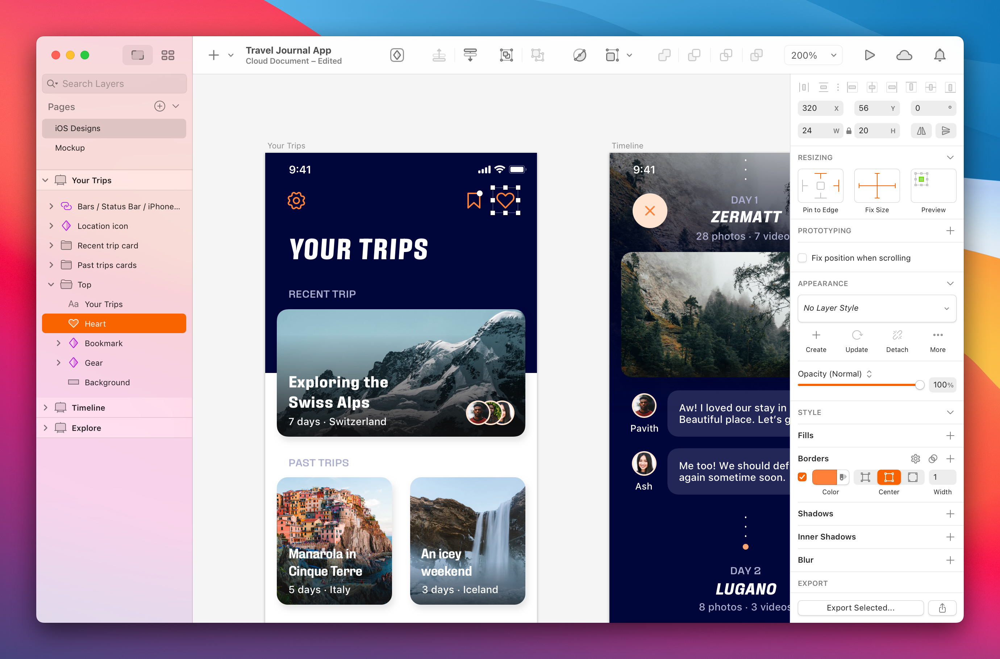

设计周刊 Design Weekly #35
🏷 设计资源
Figma 的网格系统如何使用？-For Beginner
https://www.figma.com/community/file/908391866828928884
一个不断增长的伊朗设计师目录。

Moonbridge
制作 WebGl 的可视化在线工具，来发挥你的想象力吧~

🏷 设计文章
UX面试技巧
https://uxplanet.org/tips-for-a-successful-ux-design-interview-9a2617fa0098
准备面试是实现职业目标重要的一步。 文中从如何回答招聘者的 6 个经典问题以及七问面试官两个维度对面试进行了分析和解答。感兴趣的同学可以关注一下。

跨职能设计实践
https://medium.com/talabat-tech/a-roller-coaster-design-practice-80dc6e80d0c4
在跨职能团队中，经常会遇到各种摩擦而导致项目延期等情况，作者通过自己的工作实践，向大家分享了如何在这样的团队中更快、更好的实现同一目标。

设计与开发的合作：好，更好，最好
https://uxdesign.cc/design-collaboration-with-engineering-in-tech-good-better-best-85308ce82a0c
在互联网公司，设计师和开发人员经常会被问到这个问题：设计与开发是如何协作的？其实很长一段时间，我都很疑惑为什么产品与设计、产品与开发、设计与开发之间的关系会被描述的很紧张，
最近看到网上很多相关的文章，大部分都是多多沟通，按照流程理性的去处理那些紧张的关系。Figma 最近前段时间新推出的版本也旨在化解这场灾难。本文作者Mari Reis 也讲述了作为设计师在不同公司的 3 种不同的的合作方式，以及它们的优缺点。分享这篇文章给大家，希望大家可以有所借鉴，来处理看上去特别可笑又实际存在的问题。

🏷 设计灵感
这一百万亿首诗，是感受诗意生活的钥匙
https://www.topys.cn/article/31183
法国作家雷蒙·格诺（Raymond Queneau，1903—1976）于1961年发表了这本名为《一百万亿首诗》的书，通过排列组合的方式，他将十首十四行诗重组，让十首十四行诗的每一行都可以自由组合，随手一翻，便自动生产出了一百万亿首诗。
一百万亿首诗是什么概念？！以每天阅读8小时、每年阅读200天计，读完这本书耗时超过10亿年，即便一刻不停地阅读，也需要花费大约1.9亿年才能读完，也就是说，即便穷尽一生，也只能读完这部诗歌机器生成的一小部分诗。

🏷 设计新闻
Yes Sur：Sketch 适配 BigSur 的幕后花絮
https://www.sketch.com/blog/2020/11/18/yes-sur-behind-the-scenes-of-sketchs-macos-makeover
哦吼，这是一次进化，不是一场革命。

🏷 随便看看
2020年度气象摄影师大赛获奖名单出炉
https://kottke.org/20/11/the-winners-of-the-2020-weather-photographer-of-the-year-competition
这也太好看了吧！